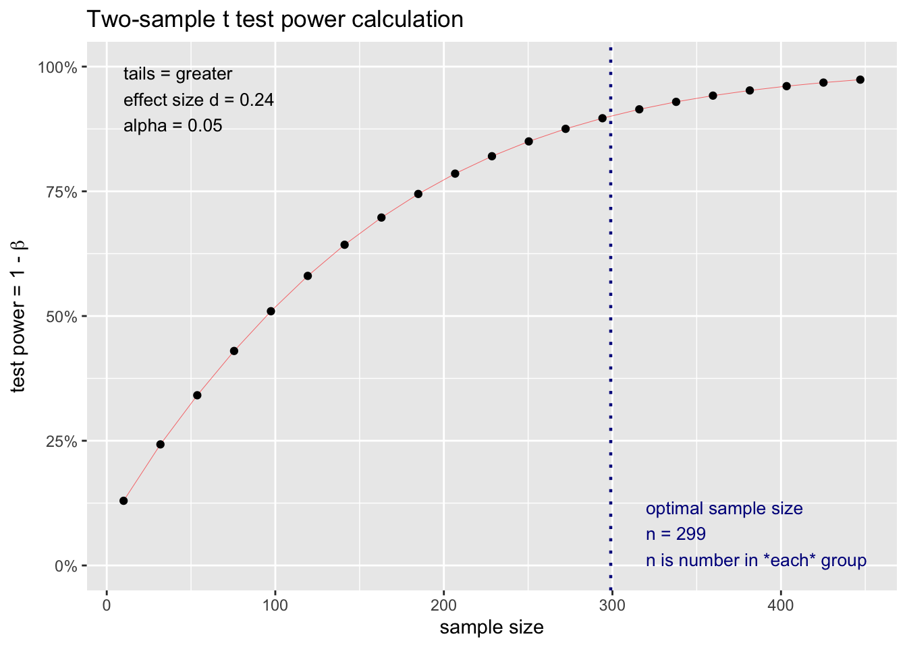
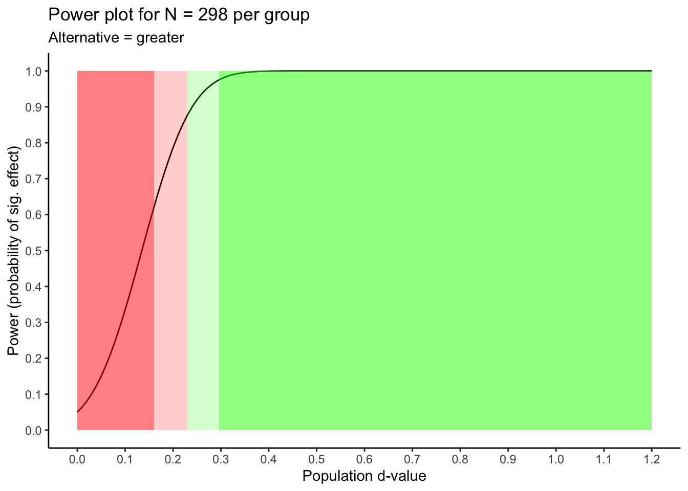
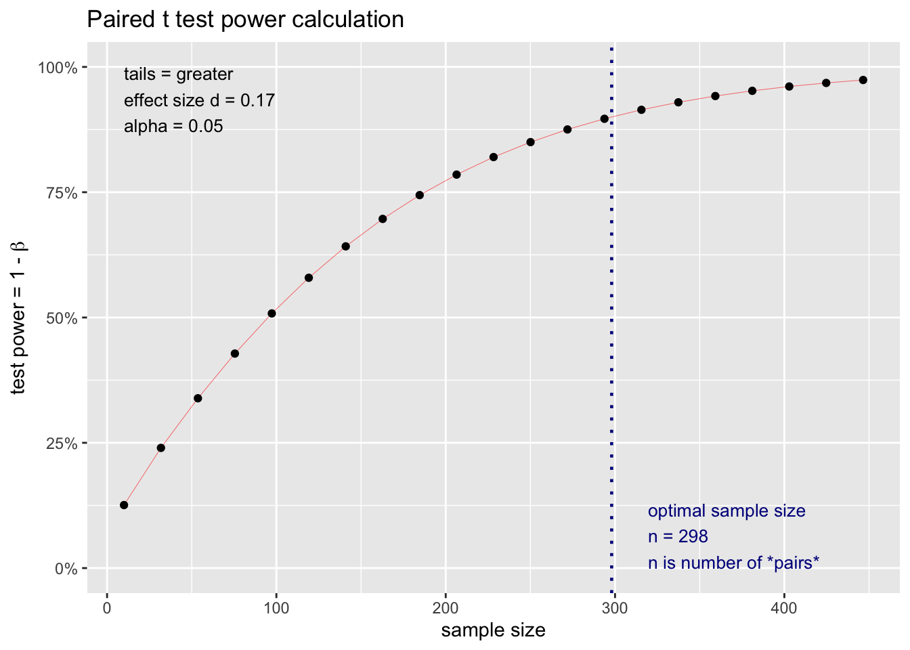
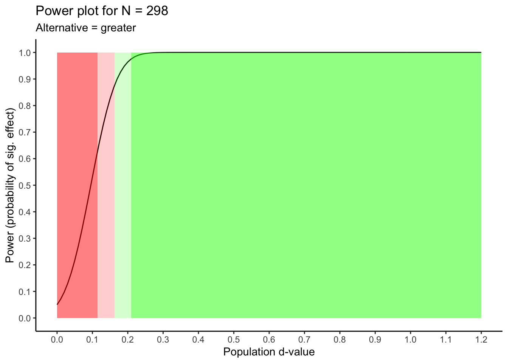
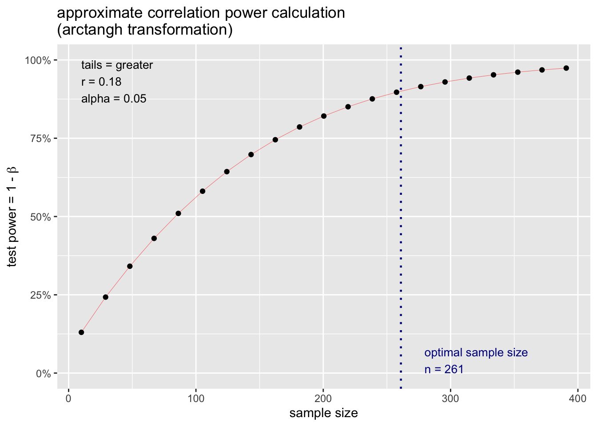
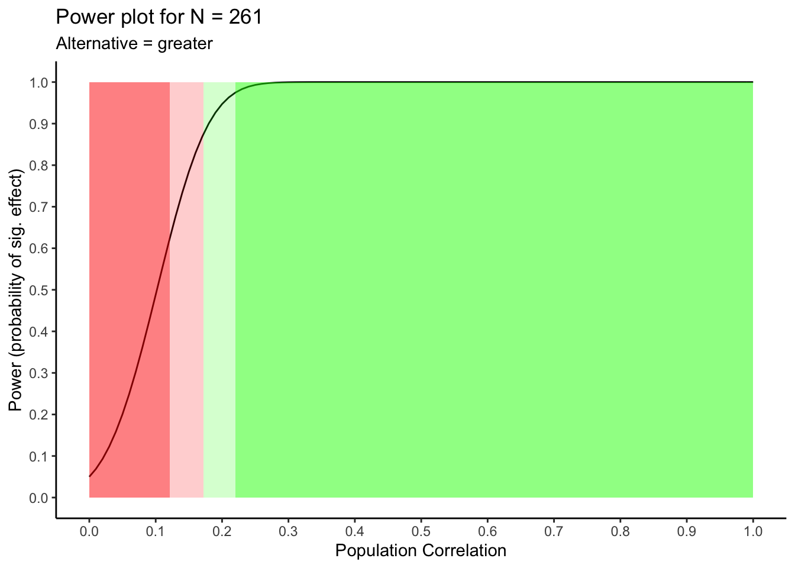

Chapter 8 NHST and sample size
8.1 Required
The following CRAN packages must be installed:
| Required CRAN Packages |
|---|
| MBESS |
| pwr |
8.2 Overview
In this chapter we focus on statistical power – which is the probability of finding an effect if it exists. For example, if the power for your study is .90 that means you have a 90% chance of finding an effect if it exists. On the other hand, if your statistical power is below .50 that means you have less than a 50% chance of finding an effect if it exists. If your power is .50 you might well question whether it is even worth conducting your study - because the odds of finding an effect (if there is one) are so incredibly low. Low statistical power means you have a low chance of concluding there is an effect when an effect is present.
Unfortunately, many researchers only focus on statistical power with respect to failing to find an effect when it is present. In fact, low statistical power is directly related to false positive findings. That is, when statistical power is low and you obtain a significant \(p\)-value, it’s likely that this is false positive finding (i.e., a falsely significant \(p\)-value). Low statistical power means you have a high chance of concluding there is an effect when an effect is not present.
The two points above indicate that low statistical power is associated with untrustworthy research findings. When statistical power is low findings are not credible - regardless of whether they are significant or not. Unfortunately, power levels are typically quite low in psychology and related disciplines. Indeed, (Button et al. 2013) noted in their Nature Reviews Neuroscience article that the “median statistical power of studies in the neuroscience field is optimistically estimated to be between ~8% and ~31%” (p. 8). This may seem surprising given the large effects sometimes observed in neuroscience, however, “the larger reported effect sizes in cognitive neuroscience may well be the consequence of effect size exaggeration due to having smaller sample sizes (as shown above) and consequential low power” (p. 8, Szucs and Ioannidis 2017). Biomedical research, more generally, appears to have a low power problem (Dumas-Mallet et al. 2017). That said, the power levels in the rest of psychology are only marginally higher - so the entire field has substantial problem - it is not a problem limited to neuroscience or biomedical research.
Interesting, it is possible to calculate the average statistical power for a journal. Doing so allows us to examine many journals and, in particular, the relation between journal impact factor (how often they are cited) and journal statistical power. It turns out there is a negative relation between journal statistical power and journal impact factor (Szucs and Ioannidis 2017). This indicates that as the journal impact factor increases there is a corresponding decrease in statistical power – which means means that journals with high impact factors (those that are most cited) tend to have the most untrustworthy findings. This conclusion is perhaps not as counter intuitive as it might seem. High impact journals often have policies that require published findings to be surprising. The most surprising finding is one that is wrong and inconsistent with previous research – the exact type of finding you will get with low statistical power.
8.3 Goals
In the rest of the chapter we focus on obtaining the desired power for our study by conducting a sample size analysis based on Null Hypothesis Significance Testing (NHST) logic. We caveat all of the subsequent advise is based on the goal of obtaining research findings that are trustworthy. Many times, however, research may be conducted with a different goal. For example, an Honours Thesis in psychology may be conducted with the primary goal being a learning experience for the student. When this is the case (as it often is in training scenarios) then the sample sizes used for the project may fall substantially short of the sample sizes suggested by power analyses below. This occurs frequently due to the fact that student theses have limited time and financial resources because the focus is on learning the research process rather than producing robust findings.
Conducting a sample size analysis requires a few pieces of information before you start.
Desired power. Power refers to probability of obtaining a significant result (p < .05) if the effect/difference exists. Often a power level of .80 or .85 is suggested when planning studies. However, a power-level of .90 is probability more advisable given how easy it is to obtain a \(p\)-value less than .05. Indeed, Dr. Daniel Lakens notes that only individuals with power .90 or higher are eligible for funding in his Department at the Eindhoven University of Technology.
Population-level effect size. To conduct a sample-size analysis you need an estimate of the population effect size you are trying to find. Most commonly, for theses, that means you needs a estimate of the population-level \(d\)-value (i.e., \(\delta\)) or population-level correlation (\(\rho\)) that you are trying to detect.
Below we present the process for conducting a sample size analysis for the independent groups \(t\)-test, repeated measures \(t\)-test, andcorrelations. For each of these analyses we go through three steps:
- Estimating the population effect size
- Determining the desired sample size for your study
- Determining what sample-level effect sizes will be significant in your study with the desired sample size.
As we review these steps for the analyses below we omit using subjective judgment as the basis for estimating the population effect size. Sometimes researchers are tempted to use a subjective judgment as to whether the population effect is small, medium, or large based on Cohen’s (1988) benchmarks. Unfortunately, using benchmarks of this sort as the basis for determine the smallest effect size of interest (SESOI) at the population level is problematic because it is subjective. Many researchers might be tempted to take a middle of the road approach and use a medium effect size. Yet a review of meta-analytic effect sizes (i.e., population estimates) by (Hemphill 2003) indicated that 2/3 of the population effect sizes in psychology are lower than a medium effect. Consequently, taking a middle of the road approach and assuming a medium effect size is likely to result in low statistical power. Indeed, “[r]elying on a benchmark is the weakest possible justification of a SESOI and should be avoided.” (p. 262, Lakens, Scheel, and Isager 2018)
8.4 Independent groups \(t\)-test
8.4.1 Population effect size
8.4.1.1 Safeguard approach
The \(d\)-value obtained from a previous independent groups \(t\)-test study is highly influenced by sampling error and therefore a relatively poor estimate of the population \(d\)-value (\(\delta\)). The population \(d\)-value may be substantially higher or lower than the previous study’s sample \(d\)-value. If the population \(d\)-value is higher than the previous study’s \(d\)-value this does not create a problem for detecting the effect being studied. On the other hand, if the population \(d\)-value is substantially lower than the previous study’s \(d\)-value then the situation is problematic. Using the previous study’s effect size in your sample size/power analysis will produce a desired sample size for your study that is insufficient to detect the effect of interest. Consequently one approach for determining the smallest effect size of interest in your power analysis is a safeguard approach (Perugini, Gallucci, and Costantini 2014).
With this approach you use the lower bound of the 95% confidence interval as the population effect size in your power / sample size analysis. Let’s assume the effect size in the previous study was \(d\) = 0.45 and there were 50 people in each group. If the previous study did not report an effect size - you can use the approaches outlined in the “Effect sizes from publications” chapter to obtain one. The confidence interval is obtained by:
## $Lower.Conf.Limit.smd
## [1] 0.05187
##
## $smd
## [1] 0.45
##
## $Upper.Conf.Limit.smd
## [1] 0.8459Thus, \(d\) = 0.45, 95% CI [0.05, 0.85]. Therefore, with a sample \(d\)-value of 0.45 (\(n_1=n_2=50\)) a plausible range for the population \(d\)-value (\(\delta\)) is 0.05 to 0.85. That is, the population \(d\)-value (\(\delta\)) could be as low as 0.05. Therefore, we would use \(\delta\) = 0.05 as the population effect size in next stage of the power/sample size analysis: Determining Sample Size.
8.4.1.2 Small telescope
The small telescope approach to determining the effect size to use in your independent groups \(t\)-test power/sample size analysis is based on the analogy of a telescope (Simonsohn 2015). Imagine you are an astronomer. A previous study used a small telescope and claimed to see a new asteroid. You are the proud owner of a large telescope and decide to look for the asteroid. If the asteroid exists then you should be able to find it easily with your larger telescope. Conversely, if the you are unable to find the asteroid with your larger telescope it draws into question the original study. In this example, the size of the telescope is a proxy for statistical power. Use of this approach is based on the premise the previous study had a significant finding.
We begin by assuming the previous study is a small telescope and has low statistical power. We use the cell sizes for the two groups from the previous study and assume a power of .33. Then we calculate the population effect that would produce a power of .33 using the code below:
library(pwr)
# Based on the previous study modify the settings below.
# For alternative: use "greater" for one-sided
# and "two.sided" for two-sided test
# For n1 and n2 indicate the two group sizes
alternative <- "greater"
n1 <- 50
n2 <- 50
# do not modify this line
pwr.t2n.test(power = .33,
n1 = n1,
n2 = n2,
alternative = alternative)##
## t test power calculation
##
## n1 = 50
## n2 = 50
## d = 0.2427
## sig.level = 0.05
## power = 0.33
## alternative = greaterThe indicates when \(\delta\) = .24 the previous study (with 50 per group) would have statistical power of .33. Therefore, we would use \(\delta\) = .24 as the population effect size in next stage of the power/sample size analysis: Determining Sample Size.
8.4.1.3 Smallest sig. effect
Another approach to determine the effect size using in your independent groups \(t\)-test power / sample size analysis is to determine the smallest effect that would have been significant in the previous study (Lakens, Scheel, and Isager 2018). We do that with the code below:
# Based on the previous study modify the settings below.
# For n1 and n2 indicate the two group sizes
n1 <- 50
n2 <- 50
# Did the previous study use a direction (one-tail test)
# Set p_critical accordingly
# use .975 if original study was two-tail test;
# use .95 if original study was one-tail test
p_critical <- .95 # indicates one-tail test
# do not modify the lines below
df <- n1 + n2 - 2
t_critical <- qt(p = p_critical, df = df)
d_critical <- t_critical * sqrt(1/n1 + 1/n2)
print(d_critical)## [1] 0.3321The indicates that the smallest sample \(d\)-value that would have been significant in the previous study is \(d\) = 0.33. Therefore, we would use \(\delta\) = .33 as the population effect size in next stage of the power/sample size analysis: Determining Sample Size.
8.4.2 Determining sample size
To determine a sample size for your independent groups \(t\)-test you need to:
specify an estimate of the population effect size (see the various methods reviewed above)
specify desired power (probability of a significant effect if it exists)
specify if you are conducting a one-tailed or two-tailed test
examine a graph to see how a greater/fewer number of participants influences power
examine a graph to see how a higher/lower population effect power
In the example below we use:
Effect size estimate from the small telescope approach (\(\delta = .24\))
Desired power of .90 - a 90% chance of finding our effect if it exists
The fact the we wish to conduct a one-tail test (i.e., in our study we will have a directional alternative hypothesis)
library(pwr)
# Based on the previous study modify the settings below.
# For alternative: use "greater" for one-sided
# and "two.sided" for two-sided test
alternative <- "greater"
pop_d <- .24
power <- .90
pwr_out <- pwr.t.test(d = pop_d,
power = power,
type = "two.sample",
alternative = alternative)Then we need to print our power / sample size analysis:
##
## Two-sample t test power calculation
##
## n = 298
## d = 0.24
## sig.level = 0.05
## power = 0.9
## alternative = greater
##
## NOTE: n is number in *each* groupThis analysis reveals that a) if we assume the population effect size is .24 (\(\delta = .24\)) and b) desire a 90% chance of finding our effect if it exits - we need 298 people/animals per group. So a total of 596 participants for these two cells.
8.4.2.0.1 A different number of participants?
But what happens to our power if we get a greater/fewer number of participants? We don’t always have control over the exact number due to non-response rates etc. We can use the graph below to see how power changes as the number of participants changes. Based on an examination of this graph, we may want to adjust the number of participants.

We can see the information conveyed in the graph above for an independent groups \(t\)-test in table form using the code below.
# Specify the population effect size from your power analysis
pop_d <- .24
# Do not change code below
pwr_50 <- round(pwr.t.test(d = pop_d, power = .50)$n)
pwr_80 <- round(pwr.t.test(d = pop_d, power = .80)$n)
pwr_95 <- round(pwr.t.test(d = pop_d, power = .95)$n)
power_labels <- c("dangerously low power (0 to .50)",
"low power (.50 to .80)",
"adequate power (.80 to .95)",
"almost certain power (> .95)")
power_table <- data.frame(power = power_labels,
n_start = round(c(1, pwr_50, pwr_80, pwr_95),2),
n_end = round(c(pwr_50, pwr_80, pwr_95, NA),2))
print(power_table)## power n_start n_end
## 1 dangerously low power (0 to .50) 1 134
## 2 low power (.50 to .80) 134 273
## 3 adequate power (.80 to .95) 273 452
## 4 almost certain power (> .95) 452 NAThis table indicates that assuming a population effect size of \(\delta\) = .24 that your statistical power will be:
dangerously low if you have between 1 and 134 participants per group
low if you have between 134 and 273 participants per group
adequate if you have between 273 and 452 participants per group
excellent if you have 452 or more participants per group
8.4.2.0.2 A different effect size?
Sample size calculations use an estimate of the unknown population effect size. What happens to power if the population effect size is different than what we estimated. That information is conveyed in the graph below. An examination of this output might cause you to adjust your sample size.
library(pwr)
library(tidyverse)
# Indicate the type of test for your study.
# For alternative: use "greater" for one-sided
# and "two.sided" for two-sided test
alternative <- "greater"
n <- 298 # N per group for two.sample test
max_pop_d = 1.2 #max d value on x-axis. Must be high (e.g., 3 or so) when n is low.
# Do not modify code below
type = "two.sample" # Use "two.sample" or "paired"
pop_d <- seq(0, max_pop_d, by = 0.01)
pop_d_axis_values <- seq(0, max_pop_d, by = 0.10)
power_values <- data.frame(pop_d = pop_d, n = n, power = NA)
for (i in 1:nrow(power_values)){
pwr_analysis <- pwr.t.test(d = power_values$pop_d[i],
n = n,
type = type,
alternative = alternative)
power_values$power[i] <- pwr_analysis$power
}
pwr_50 <- pwr.t.test(n = n, power = .50, type = type)$d
pwr_80 <- pwr.t.test(n = n, power = .80, type = type)$d
pwr_95 <- pwr.t.test(n = n, power = .95, type = type)$d
power_plot <- ggplot(data = power_values,
mapping = aes(x = pop_d, y = power)) +
geom_line() +
scale_x_continuous(breaks = pop_d_axis_values) +
scale_y_continuous(breaks = seq(0, 1, by = .10)) +
labs(title = sprintf("Power plot for N = %g per group", n),
subtitle = sprintf("Alternative = %s", alternative),
x = "Population d-value",
y = "Power (probability of sig. effect)") +
annotate("rect", xmin = 0, xmax = pwr_50,
ymin = 0, ymax = 1,
fill = "red", alpha = .5) +
annotate("rect", xmin = pwr_50, xmax = pwr_80,
ymin = 0, ymax = 1,
fill = "red", alpha = .2) +
annotate("rect", xmin = pwr_80, xmax = pwr_95,
ymin = 0, ymax = 1,
fill = "green", alpha = .2) +
annotate("rect", xmin = pwr_95, xmax = max_pop_d,
ymin = 0, ymax = 1,
fill = "green", alpha = .5) +
theme_classic()
print(power_plot)
We can see the information conveyed in the graph above for an independent groups \(t\)-test in table form using the code below.
# Specify the sample size per group from your power analysis
n = 298 # N per group
# Do not modify the code below
pwr_50 <- pwr.t.test(n = n, power = .50, type = "two.sample")$d
pwr_80 <- pwr.t.test(n = n, power = .80, type = "two.sample")$d
pwr_95 <- pwr.t.test(n = n, power = .95, type = "two.sample")$d
power_labels <- c("dangerously low power (0 to .50)",
"low power (.50 to .80)",
"adequate power (.80 to .95)",
"almost certain power (> .95)")
power_table <- data.frame(power = power_labels,
delta_start = round(c(0, pwr_50, pwr_80, pwr_95),2),
delta_end = round(c(pwr_50, pwr_80, pwr_95, NA),2))
print(power_table)## power delta_start delta_end
## 1 dangerously low power (0 to .50) 0.00 0.16
## 2 low power (.50 to .80) 0.16 0.23
## 3 adequate power (.80 to .95) 0.23 0.30
## 4 almost certain power (> .95) 0.30 NAThis table indicates that using 298 people per group your statistical power will be:
dangerously low if the actual population effect is higher than 0 and lower than \(\delta = 0.16\)
low if the actual population effect is between \(\delta = 0.16\) and \(\delta = 0.23\)
adequate if the actual population effect is between \(\delta = 0.23\) and \(\delta = 0.30\)
excellent if the actual population effect is higher than \(\delta = 0.30\)
8.4.3 What will be signficant?
Let’s assume that after looking at all the graphs and tables you end up sticking with your initial sample size of 298 per group. What sample-level effect sizes will be significant when you do so?
# Specify the sample size per group from your power / sample size analysis
n1 <- 298
n2 <- 298
# Use .95 for one-sided and .975 for two-sided tests
percentile = .95
# Do not modify the code below
t_critical <- qt(percentile, df = (n1 + n2 - 2))
d_critical = t_critical * sqrt((1/n1) + (1/n2))
print(d_critical)## [1] 0.135This indicates that with a sample size of 298 per group that only independent groups \(d\)-values greater than \(d\) = 0.135 will be significant.
8.5 Repeated measures \(t\)-test
8.5.1 Population effect size
8.5.1.1 Safeguard approach
The \(d\)-value obtained from a previous repeated measures \(t\)-test study is highly influenced by sampling error and therefore a relatively poor estimate of the population \(d\)-value (\(\delta\)). The population \(d\)-value may be substantially higher or lower than the previous study’s sample \(d\)-value. If the population \(d\)-value is higher than the previous study’s \(d\)-value this does not create a problem for detecting the effect being studied. On the other hand, if the population \(d\)-value is substantially lower than the previous study’s \(d\)-value then the situation is problematic. Using the previous study’s effect size in your sample size/power analysis will produce a desired sample size for your study that is insufficient to detect the effect of interest. Consequently one approach for determining the smallest effect size of interest in your power analysis is a safeguard approach (Perugini, Gallucci, and Costantini 2014).
With this approach you use the lower bound of the 95% confidence interval as the population effect size in your power / sample size analysis. Let’s assume the effect size in the previous study was \(d\) = 0.45 and there were 50 participants. If the previous study did not report an effect size - you can use the approaches outlined in the “Effect sizes from publications” chapter to obtain one. The confidence interval is obtained by:
## [1] "The 0.95 confidence limits for the standardized mean are given as:"## $Lower.Conf.Limit.Standardized.Mean
## [1] 0.1568
##
## $Standardized.Mean
## [1] 0.45
##
## $Upper.Conf.Limit.Standardized.Mean
## [1] 0.739Thus, \(d\) = 0.45, 95% CI [0.16, 0.74]. Therefore, with a sample \(d\)-value of 0.45 (\(N=50\)) a plausible range for the population \(d\)-value (\(\delta\)) is 0.16 to 0.74. That is, the population \(d\)-value (\(\delta\)) could be as low as 0.16. Therefore, we would use \(\delta\) = 0.16 as the population effect size in next stage of the power/sample size analysis: Determining Sample Size.
8.5.1.2 Small telescope
The small telescope approach to determining the effect size to use in your repeated measures \(t\)-test power/sample size analysis is based on the analogy of a telescope (Simonsohn 2015). Imagine you are an astronomer. A previous study used a small telescope and claimed to see a new asteroid. You are the proud owner of a large telescope and decide to look for the asteroid. If the asteroid exists then you should be able to find it easily with your larger telescope. Conversely, if the you are unable to find the asteroid with your larger telescope it draws into question the original study. In this example, the size of the telescope is a proxy for statistical power. Use of this approach is based on the premise the previous study had a significant finding.
We begin by assuming the previous study is a small telescope and has low statistical power. We use the csample size from the previous study and assume a power of .33. Then we calculate the population effect that would produce a power of .33 using the code below:
library(pwr)
# Based on the previous study modify the settings below.
# For alternative: use "greater" for one-sided
# and "two.sided" for two-sided test
# For n indicate the sample size
alternative <- "greater"
n <- 50
# do not modify this line
pwr.t.test(power = .33,
n = n,
type = "paired",
alternative = alternative)##
## Paired t test power calculation
##
## n = 50
## d = 0.1728
## sig.level = 0.05
## power = 0.33
## alternative = greater
##
## NOTE: n is number of *pairs*The indicates when \(\delta\) = 0.17 the previous study (with 50 participants) would have statistical power of .33. Therefore, we would use \(\delta\) = 0.17 as the population effect size in next stage of the power/sample size analysis: Determining Sample Size.
8.5.1.3 Smallest sig. effect
Another approach to determine the effect size using in your repeated measures \(t\)-test power / sample size analysis is to determine the smallest effect that would have been significant in the previous study (Lakens, Scheel, and Isager 2018). We do that with the code below:
# Based on the previous study modify the settings below.
# For n indicate the sample size
n <- 50
# Did the previous study use a direction (one-tail test)
# Set p_critical accordingly
# use .975 if original study was two-tail test;
# use .95 if original study was one-tail test
p_critical <- .95 # indicates one-tail test
# do not modify the lines below
df <- n - 1
t_critical <- qt(p = p_critical, df = df)
d_critical <- t_critical * sqrt(1/n)
print(d_critical)## [1] 0.2371The indicates that the smallest sample \(d\)-value that would have been significant in the previous study is \(d\) = 0.24. Therefore, we would use \(\delta\) = .24 as the population effect size in next stage of the power/sample size analysis: Determining Sample Size.
8.5.2 Determining sample size
To determine a sample size for your repeated measures \(t\)-test you need to:
specify an estimate of the population effect size (see the various methods reviewed above)
specify desired power (probability of a significant effect if it exists)
specify if you are conducting a one-tailed or two-tailed test
examine a graph to see how a greater/fewer number of participants influences power
examine a graph to see how a higher/lower population effect power
In the example below we use:
Effect size estimate from the small telescope approach (\(\delta = .17\))
Desired power of .90 - a 90% chance of finding our effect if it exists
The fact the we wish to conduct a one-tail test (i.e., in our study we will have a directional alternative hypothesis)
library(pwr)
# Based on the previous study modify the settings below.
# For alternative: use "greater" for one-sided
# and "two.sided" for two-sided test
alternative <- "greater"
pop_d <- .17
power <- .90
pwr_out <- pwr.t.test(d = pop_d,
power = power,
type = "paired",
alternative = alternative)Then we need to print our power / sample size analysis:
##
## Paired t test power calculation
##
## n = 297.7
## d = 0.17
## sig.level = 0.05
## power = 0.9
## alternative = greater
##
## NOTE: n is number of *pairs*This analysis reveals that a) if we assume the population effect size for our repeated measures \(t\)-test is 0.17 (\(\delta = 0.17\)) and b) desire a 90% chance of finding our effect if it exits - we need 298 participants.
8.5.2.0.1 A different number of participants?
But what happens to our power if we get a greater/fewer number of participants? We don’t always have control over the exact number due to non-response rates etc. We can use the graph below to see how power changes as the number of participants changes. Based on an examination of this graph, we may want to adjust the number of participants.

We can see the information conveyed in the graph above for an repeated measures \(t\)-test in table form using the code below.
# Specify the population effect size from your power analysis
pop_d <- .17
# Do not change code below
pwr_50 <- round(pwr.t.test(d = pop_d, power = .50, type = "paired")$n)
pwr_80 <- round(pwr.t.test(d = pop_d, power = .80, type = "paired")$n)
pwr_95 <- round(pwr.t.test(d = pop_d, power = .95, type = "paired")$n)
power_labels <- c("dangerously low power (0 to .50)",
"low power (.50 to .80)",
"adequate power (.80 to .95)",
"almost certain power (> .95)")
power_table <- data.frame(power = power_labels,
n_start = round(c(1, pwr_50, pwr_80, pwr_95),2),
n_end = round(c(pwr_50, pwr_80, pwr_95, NA),2))
print(power_table)## power n_start n_end
## 1 dangerously low power (0 to .50) 1 135
## 2 low power (.50 to .80) 135 274
## 3 adequate power (.80 to .95) 274 452
## 4 almost certain power (> .95) 452 NAThis table indicates that assuming a population effect size of \(\delta\) = .24 that your statistical power will be:
dangerously low if you have between 1 and 135 participants
low if you have between 135 and 274 participants
adequate if you have between 274 and 452 participants
excellent if you have 452 or more participants
8.5.2.0.2 A different effect size?
Sample size calculations use an estimate of the unknown population effect size. What happens to power if the population effect size is different than what we estimated. That information is conveyed in the graph below. An examination of this output might cause you to adjust your sample size.
library(pwr)
library(tidyverse)
# Indicate the type of test for your study.
# For alternative: use "greater" for one-sided
# and "two.sided" for two-sided test
alternative <- "greater"
n <- 298 # sample size
max_pop_d = 1.2 #max d value on x-axis. Must be high (e.g., 3 or so) when n is low.
# Do not modify code below
type = "paired" # Use "two.sample" or "paired"
pop_d <- seq(0, max_pop_d, by = 0.01)
pop_d_axis_values <- seq(0, max_pop_d, by = 0.10)
power_values <- data.frame(pop_d = pop_d, n = n, power = NA)
for (i in 1:nrow(power_values)){
pwr_analysis <- pwr.t.test(d = power_values$pop_d[i],
n = n,
type = type,
alternative = alternative)
power_values$power[i] <- pwr_analysis$power
}
pwr_50 <- pwr.t.test(n = n, power = .50, type = type)$d
pwr_80 <- pwr.t.test(n = n, power = .80, type = type)$d
pwr_95 <- pwr.t.test(n = n, power = .95, type = type)$d
power_plot <- ggplot(data = power_values,
mapping = aes(x = pop_d, y = power)) +
geom_line() +
scale_x_continuous(breaks = pop_d_axis_values) +
scale_y_continuous(breaks = seq(0, 1, by = .10)) +
labs(title = sprintf("Power plot for N = %g", n),
subtitle = sprintf("Alternative = %s", alternative),
x = "Population d-value",
y = "Power (probability of sig. effect)") +
annotate("rect", xmin = 0, xmax = pwr_50,
ymin = 0, ymax = 1,
fill = "red", alpha = .5) +
annotate("rect", xmin = pwr_50, xmax = pwr_80,
ymin = 0, ymax = 1,
fill = "red", alpha = .2) +
annotate("rect", xmin = pwr_80, xmax = pwr_95,
ymin = 0, ymax = 1,
fill = "green", alpha = .2) +
annotate("rect", xmin = pwr_95, xmax = max_pop_d,
ymin = 0, ymax = 1,
fill = "green", alpha = .5) +
theme_classic()
print(power_plot)
We can see the information conveyed in the graph above for an repeated measures \(t\)-test in table form using the code below.
# Specify the sample size from your power analysis
n = 298
# Do not modify the code below
pwr_50 <- pwr.t.test(n = n, power = .50, type = "paired")$d
pwr_80 <- pwr.t.test(n = n, power = .80, type = "paired")$d
pwr_95 <- pwr.t.test(n = n, power = .95, type = "paired")$d
power_labels <- c("dangerously low power (0 to .50)",
"low power (.50 to .80)",
"adequate power (.80 to .95)",
"almost certain power (> .95)")
power_table <- data.frame(power = power_labels,
delta_start = round(c(0, pwr_50, pwr_80, pwr_95),2),
delta_end = round(c(pwr_50, pwr_80, pwr_95, NA),2))
print(power_table)## power delta_start delta_end
## 1 dangerously low power (0 to .50) 0.00 0.11
## 2 low power (.50 to .80) 0.11 0.16
## 3 adequate power (.80 to .95) 0.16 0.21
## 4 almost certain power (> .95) 0.21 NAThis table indicates that using 298 participants your statistical power will be:
dangerously low if the actual population effect is higher than 0 and lower than \(\delta = 0.11\)
low if the actual population effect is between \(\delta = 0.11\) and \(\delta = 0.16\)
adequate if the actual population effect is between \(\delta = 0.16\) and \(\delta = 0.21\)
excellent if the actual population effect is higher than \(\delta = 0.21\)
8.5.3 What will be signficant?
Let’s assume that after looking at all the graphs and tables you end up sticking with your initial sample size of 298. What sample-level effect sizes will be significant when you do so?
# Specify the sample size from your power / sample size analysis
n <- 298
# Use .95 for one-sided and .975 for two-sided tests
percentile = .95
# Do not modify the code below
t_critical <- qt(percentile, df = (n - 1))
d_critical <- t_critical * sqrt(1/n)
print(d_critical)## [1] 0.09558This indicates that with a sample size of 298 that only repeated measures \(d\)-values greater than \(d\) = 0.10 (rounded) will be significant.
8.6 Correlations
8.6.1 Population effect size
8.6.1.1 Safeguard approach
The sample correlation obtained from a previous study is highly influenced by sampling error and therefore a relatively poor estimate of the population correlation (\(\rho\)). The population correlation may be substantially higher or lower than the previous study’s sample correlation. If the population correlation is higher than the previous study’s sample correlation this does not create a problem for detecting the effect being studied. On the other hand, if the population correlation is substantially lower than the previous study’s sample correlation then the situation is problematic. Using the previous study’s effect size in your sample size/power analysis will produce a desired sample size for your study that is insufficient to detect the effect of interest. Consequently one approach for determining the smallest effect size of interest in your power analysis is a safeguard approach (Perugini, Gallucci, and Costantini 2014).
With this approach you use the lower bound of the 95% confidence interval as the population effect size in your power / sample size analysis. Let’s assume the effect size in the previous study was \(r\) = .35 and there were 75 people. If the previous study did not report an effect size - you can use the approaches outlined in the “Effect sizes from publications” chapter to obtain one. The confidence interval is obtained by:
## $Lower.Limit
## [1] 0.1337
##
## $Estimated.Correlation
## [1] 0.35
##
## $Upper.Limit
## [1] 0.5345Thus, \(r\) = .35, 95% CI [.13, .53]. Therefore, with a sample correlation of .35 (\(N=75\)) a plausible range for the population correlation (\(\rho\)) is .13 to .53. That is, the population correlation (\(\rho\)) could be as low as .13. Therefore, we would use \(\rho\) = .13 as the population effect size in next stage of the power/sample size analysis: Determining Sample Size.
8.6.1.2 Small telescope
The small telescope approach to determining the effect size to use in your correlation power/sample size analysis is based on the analogy of a telescope (Simonsohn 2015). Imagine you are an astronomer. A previous study used a small telescope and claimed to see a new asteroid. You are the proud owner of a large telescope and decide to look for the asteroid. If the asteroid exists then you should be able to find it easily with your larger telescope. Conversely, if the you are unable to find the asteroid with your larger telescope it draws into question the original study. In this example, the size of the telescope is a proxy for statistical power. Use of this approach is based on the premise the previous study had a significant finding.
We begin by assuming the previous study is a small telescope and has low statistical power. We use the sample size from the previous study and assume a power of .33. Then we calculate the population effect that would produce a power of .33 using the code below:
library(pwr)
# Based on the previous study modify the settings below.
# For alternative: use "greater" for one-sided
# and "two.sided" for two-sided test
# For n indicate the sample size
alternative <- "two.sided"
n <- 75
# do not modify this line
pwr.r.test(n = n,
power = .33,
alternative = alternative)##
## approximate correlation power calculation (arctangh transformation)
##
## n = 75
## r = 0.1762
## sig.level = 0.05
## power = 0.33
## alternative = two.sidedThe indicates when the population correlation is .18 (rounded), \(\rho\) = .18, the previous study (with 75 participants) would have statistical power of .33. Therefore, we would use \(\rho\) = .18 as the population effect size in next stage of the power/sample size analysis: Determining Sample Size.
8.6.1.3 Smallest sig. effect
Another approach to determine the effect size using in your correlation power / sample size analysis is to determine the smallest effect that would have been significant in the previous study (Lakens, Scheel, and Isager 2018). We do that with the code below:
# Based on the previous study modify the settings below.
# For n indicate the sample size
n <- 75
# Did the previous study use a direction (one-tail test)
# Set p_critical accordingly
# use .975 if original study was two-tail test;
# use .95 if original study was one-tail test
p_critical <- .975 # indicates two-tail test
# do not modify the lines below
df <- n - 2
t_critical <- qt(p = p_critical, df = df)
r_critical <- sqrt((t_critical^2)/(df + t_critical^2))
print(r_critical)## [1] 0.2272The indicates that the smallest sample correlation that would have been significant in the previous study is \(r\) = 0.23. Therefore, we would use \(\rho\) = .23 as the population effect size in next stage of the power/sample size analysis: Determining Sample Size.
8.6.2 Determining sample size
To determine a sample size for your correlation study you need to:
specify an estimate of the population effect size (see the various methods reviewed above)
specify desired power (probability of a significant effect if it exists)
specify if you are conducting a one-tailed or two-tailed test
examine a graph to see how a greater/fewer number of participants influences power
examine a graph to see how a higher/lower population effect power
In the example below we use:
Effect size estimate from the small telescope approach (\(\rho = .18\))
Desired power of .90 - a 90% chance of finding our effect if it exists
The fact the we wish to conduct a one-tail test (i.e., in our study we will have a directional alternative hypothesis)
library(pwr)
# Based on the previous study modify the settings below.
# For alternative: use "greater" for one-sided
# and "two.sided" for two-sided test
alternative <- "greater"
pop_r <- .18
power <- .90
pwr_out <- pwr.r.test(r = pop_r,
power = power,
alternative = alternative)Then we need to print our power / sample size analysis:
##
## approximate correlation power calculation (arctangh transformation)
##
## n = 260.6
## r = 0.18
## sig.level = 0.05
## power = 0.9
## alternative = greaterThis analysis reveals that a) if we assume the population correlation is .18 (\(\rho = .18\)) and b) desire a 90% chance of finding our effect if it exits - we need 261 participants.
8.6.2.0.1 A different number of participants?
But what happens to our power if we get a greater/fewer number of participants? We don’t always have control over the exact number due to non-response rates etc. We can use the graph below to see how power changes as the number of participants changes. Based on an examination of this graph, we may want to adjust the number of participants.

We can see the information conveyed in the graph above for our proposed correlation study in table form using the code below.
# Specify the population effect size from your power analysis
pop_r <- .18
# Do not change code below
pwr_50 <- round(pwr.r.test(r = pop_r, power = .50)$n)
pwr_80 <- round(pwr.r.test(r = pop_r, power = .80)$n)
pwr_95 <- round(pwr.r.test(r = pop_r, power = .95)$n)
power_labels <- c("dangerously low power (0 to .50)",
"low power (.50 to .80)",
"adequate power (.80 to .95)",
"almost certain power (> .95)")
power_table <- data.frame(power = power_labels,
n_start = round(c(1, pwr_50, pwr_80, pwr_95),2),
n_end = round(c(pwr_50, pwr_80, pwr_95, NA),2))
print(power_table)## power n_start n_end
## 1 dangerously low power (0 to .50) 1 118
## 2 low power (.50 to .80) 118 239
## 3 adequate power (.80 to .95) 239 394
## 4 almost certain power (> .95) 394 NAThis table indicates that assuming a population effect size of \(\rho\) = .18 that your statistical power will be:
dangerously low if you have between 1 and 118 participants
low if you have between 118 and 239 participants
adequate if you have between 239 and 394 participants
excellent if you have 394 or more participants
8.6.2.0.2 A different effect size?
Sample size calculations use an estimate of the unknown population effect size. What happens to power if the population effect size is different than what we estimated. That information is conveyed in the graph below. An examination of this output might cause you to adjust your sample size.
library(pwr)
library(tidyverse)
# Indicate the type of test for your study.
# For alternative: use "greater" for one-sided
# and "two.sided" for two-sided test
alternative <- "greater"
n <- 261 # sample size
# Do not modify code below
rho <- seq(0, 1, by = 0.01)
rho_axis_values <- seq(0, 1, by = 0.10)
power_values <- data.frame(rho = rho, n = n, power = NA)
for (i in 1:nrow(power_values)){
pwr_analysis <- pwr.r.test(r = power_values$rho[i],
n = n,
alternative = alternative)
power_values$power[i] <- pwr_analysis$power
}
pwr_50 <- pwr.r.test(n = n, power = .50)$r
pwr_80 <- pwr.r.test(n = n, power = .80)$r
pwr_95 <- pwr.r.test(n = n, power = .95)$r
power_plot <- ggplot(data = power_values,
mapping = aes(x = rho, y = power)) +
geom_line() +
scale_x_continuous(breaks = rho_axis_values) +
scale_y_continuous(breaks = seq(0, 1, by = .10)) +
labs(title = sprintf("Power plot for N = %g", n),
subtitle = sprintf("Alternative = %s", alternative),
x = "Population Correlation",
y = "Power (probability of sig. effect)") +
annotate("rect", xmin = 0, xmax = pwr_50, ymin = 0, ymax = 1, fill = "red", alpha = .5) +
annotate("rect", xmin = pwr_50, xmax = pwr_80, ymin = 0, ymax = 1, fill = "red", alpha = .2) +
annotate("rect", xmin = pwr_80, xmax = pwr_95, ymin = 0, ymax = 1, fill = "green", alpha = .2) +
annotate("rect", xmin = pwr_95, xmax = 1, ymin = 0, ymax = 1, fill = "green", alpha = .5) +
theme_classic()
print(power_plot)
We can see the information conveyed in the graph above for a correlation study in table form using the code below.
# Specify the sample size from your power analysis
n = 261
# Do not modify the code below
pwr_50 <- pwr.r.test(n = n, power = .50)$r
pwr_80 <- pwr.r.test(n = n, power = .80)$r
pwr_95 <- pwr.r.test(n = n, power = .95)$r
power_labels <- c("dangerously low power (0 to .50)",
"low power (.50 to .80)",
"adequate power (.80 to .95)",
"almost certain power (> .95)")
power_table <- data.frame(power = power_labels,
rho_start = round(c(0, pwr_50, pwr_80, pwr_95),2),
rho_end = round(c(pwr_50, pwr_80, pwr_95, NA),2))
print(power_table)## power rho_start rho_end
## 1 dangerously low power (0 to .50) 0.00 0.12
## 2 low power (.50 to .80) 0.12 0.17
## 3 adequate power (.80 to .95) 0.17 0.22
## 4 almost certain power (> .95) 0.22 NAThis table indicates that using 261 participants your statistical power will be:
dangerously low if the actual population effect is higher than 0 and lower than \(\rho = .12\)
low if the actual population effect is between \(\rho = .12\) and \(\rho = .17\)
adequate if the actual population effect is between \(\rho = 0.16\) and \(\rho = 0.22\)
excellent if the actual population effect is higher than \(\rho = 0.22\)
8.6.3 What will be signficant?
Let’s assume that after looking at all the graphs and tables you end up sticking with your initial sample size of 261. What sample-level effect sizes will be significant when you do so?
# Specify the sample size from your power / sample size analysis
n <- 261
# Use .95 for one-sided and .975 for two-sided tests
percentile = .95
# Do not modify the code below
t_critical <- qt(percentile, df = (n - 2))
t2 <- t_critical^2
r_critical = sqrt(t2 / (t2 + (n-2)))
print(r_critical)## [1] 0.102This indicates that with a sample size of 261 that only sample correlations greater than \(r\) = .10 (rounded) will be significant.
References
Dumas-Mallet, Estelle, Katherine S Button, Thomas Boraud, Francois Gonon, and Marcus R Munafò. 2017. “Low Statistical Power in Biomedical Science: A Review of Three Human Research Domains.” Royal Society Open Science 4 (2): 160254.
Hemphill, James F. 2003. “Interpreting the Magnitudes of Correlation Coefficients.” 58 (1): 78–80.
Lakens, Daniël, Anne M Scheel, and Peder M Isager. 2018. “Equivalence Testing for Psychological Research: A Tutorial.” Advances in Methods and Practices in Psychological Science 1 (2): 259–69.
Perugini, Marco, Marcello Gallucci, and Giulio Costantini. 2014. “Safeguard Power as a Protection Against Imprecise Power Estimates.” Perspectives on Psychological Science 9 (3): 319–32.
Simonsohn, Uri. 2015. “Small Telescopes: Detectability and the Evaluation of Replication Results.” Psychological Science 26 (5): 559–69.
Szucs, Denes, and John PA Ioannidis. 2017. “Empirical Assessment of Published Effect Sizes and Power in the Recent Cognitive Neuroscience and Psychology Literature.” PLoS Biology 15 (3): e2000797.